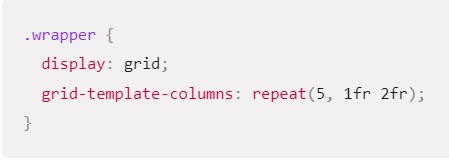
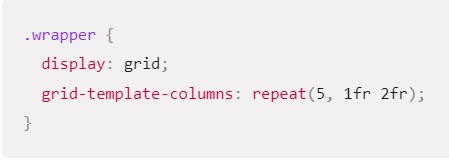
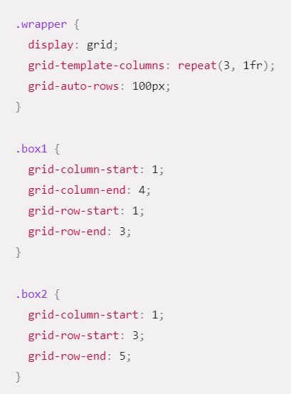
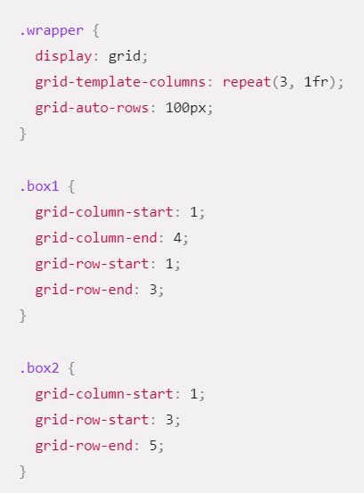
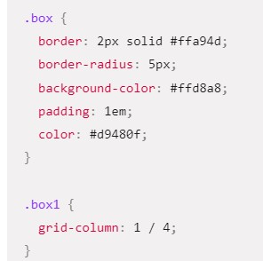
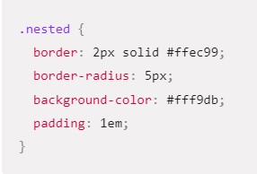
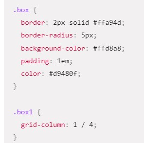
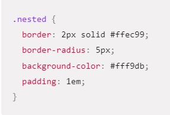

Grid System CSS
for rsschool by @georgiybeloklokov(git)

What is a grid?
Fixed and flexible track sizes
Item placement
Creation of additional tracks to hold content
Alignment control
Control of overlapping content
Grid container
Chapter 1

Grid tracks
Chapter 2
We define rows and columns on our grid with the grid-template-rows and grid-template-columns properties.
Basic example
I can add to our earlier example by adding the grid-template-columns property, then defining the size of the column tracks. I have now created a grid with three 200-pixel-wide column tracks. The child items will be laid out on this grid one in each grid cell.
The fr unit
Tracks can be defined using any length unit. Grid also introduces an additional length unit to help us create flexible grid tracks. The new fr unit represents a fraction of the available space in the grid container. The next grid definition would create three equal width tracks that grow and shrink according to the available space.

Unequal sizes
In this next example, we create a definition with a 2fr track then two 1fr tracks. The available space is split into four. Two parts are given to the first track and one part each to the next two tracks.
Mixing flexible and absolute sizes
In this final example, we mix absolute sized tracks with fr units. The first track is 500 pixels, so the fixed width is taken away from the available space. The remaining space is divided into three and assigned in proportion to the two flexible tracks.F

Track listings with repeat() notation
Large grids with many tracks can use the repeat() notation, to repeat all or a section of the track listing. For example the grid definition:

 

Implicit and explicit grids
You can also define a set size for tracks created in the implicit grid with the grid-auto-rows and grid-auto-columns properties. In this example, we use grid-auto-rows to ensure that tracks created in the implicit grid are 200 pixels tall.


Track sizing and minmax
Grid automatically creates rows that will be a minimum of 100 pixels tall, and a maximum of auto. Using auto means that the size will look at the content size and will stretch to give space for the tallest item in a cell, in this row.


Grid lines
Chapter 3
Grid lines
Grid gives us numbered lines to use when positioning items. In our three column, two row grid we have four column lines.

Positioning items against lines
Placing the first two items on our three column track grid. the first item is placed against column line 1, and spans to column line 4, which in our case is the far-right line on the grid. It begins at row line 1 and ends at row line 3, therefore spanning two row tracks.
The second item starts on grid column line 1, and spans one track. This is the default so I do not need to specify the end line. It also spans two row tracks from row line 3 to row line 5. The other items will place themselves into empty spaces on the grid.
 


Line-positioning shorthands
The value before the forward slash character (/) is the start line, the value after the end line. You can omit the end value if the area only spans one track.
Grid cells
Chapter 4
Grid cells
A grid cell is the smallest unit on a grid. Conceptually it is like a table cell.

Grid areas
Chapter 5
Grid areas
Items can span one or more cells both by row or by column, and this creates a grid area.

Gutters
Chapter 6
Gutters
Gutters or alleys between grid cells can be created using the column-gap and row-gap properties, or the shorthand gap.

Nesting grids
Chapter 7
Nesting grids
I have the three-column grid. In this case the first item has some sub-items. As these items are not direct children of the grid they do not participate in grid layout and so display in a normal document flow.

Nesting without subgrid
If I set box1 to display: grid I can give it a track definition and it too will become a grid. The items then lay out on this new grid. In this case the nested grid has no relationship to the parent. It has not inherited the gap of the parent and the lines in the nested grid do not align to the lines in the parent grid.
 



Subgrid
we would edit the above nested grid example to change the track definition of grid-template-columns: repeat(3, 1fr), to grid-template-columns: subgrid. The nested grid will then use the parent grid tracks to layout items.
.box1 {
grid-column-start: 1;
grid-column-end: 4;
grid-row-start: 1;
grid-row-end: 3;
display: grid;
grid-template-columns: subgrid;
}Layering items with z-index
Chapter 8
Overlapping without z-index
In example with items positioned by line number, we can make two items overlap. The item box2 is now overlapping box1, it displays on top as it comes later in the source order.
Controlling the order
We can control the order in which items stack up by using the z-index property - just like positioned items. If we give box2 a lower z-index than box1 it will display below box1 in the stack.